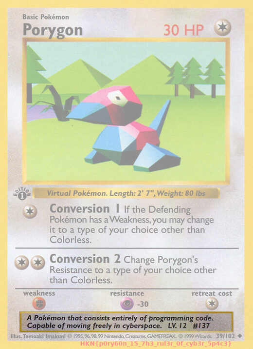

"Look at the FILE through the eyes of the terminal" — endelsen lyver.
file pokemon.jpg afslører at filen trods .jpg faktisk er et
ZIP-arkiv. Pak ud → et ægte JPEG med flaget skrevet i bunden.
file pokemon.jpg # -> Zip archive data
cp pokemon.jpg pokemon.zip && unzip pokemon.zip # -> porygon39.jpg
file porygon39.jpg # -> JPEG image dataFlag: HKN{p0ry60n_15_7h3_rul3r_0f_cyb3r_5p4c3}

porygon39.jpg (pakket ud af ZIP'en): flaget står skrevet i bunden af kortet.file — endelsen siger intet om det faktiske format.